ROTA INTELIGENTE DE TRANSPORTE
A plataforma analítica definitiva para comando, controle de frotas e otimização logística urbana em tempo real.
Monitoramento Geral
Centraliza toda a operação urbana em um mapa interativo de alta performance com filtros avançados e status operacional ao vivo.
Fila de Atendimentos Dinâmica
Status atualizado e geolocalização dos colaboradores.
Filtros Multidimensionais
Busca rápida por programa, bairro, tipo de veículo e horários.
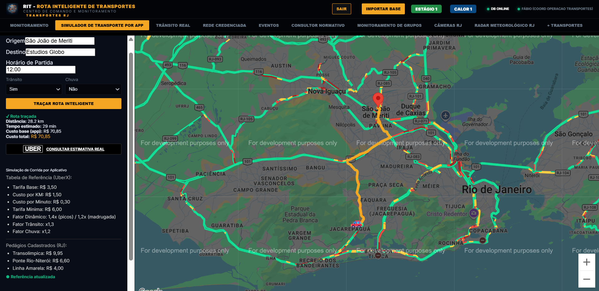
Simulador de Transporte por App
Calculadora de tarifas logística que reproduz com precisão os valores de corridas por app (ex: UberX) e apoia o controle financeiro de duas formas distintas.
Cálculo Automático de Pedágios
Identificação de praças (como Linha Amarela a R$ 4,00) de ida e retorno.
Fatores Trânsito e Chuva
Ajuste dinâmico das simulações para máxima aproximação com os apps reais.
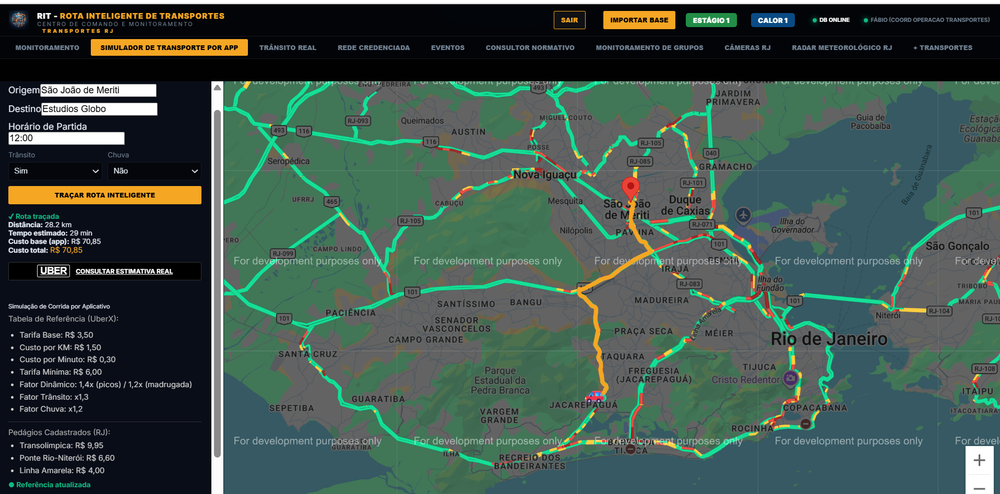
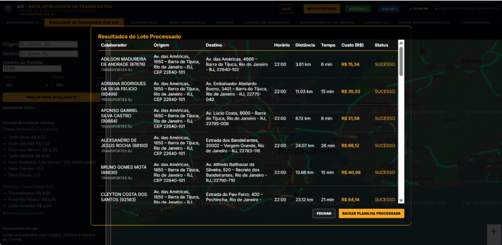
Mapa de Transportes Plotado
Visualização em tempo real das rotas e veículos gerada a partir da importação de arquivos de bases de transportes coletivos.
Importação de Planilhas
Processamento rápido de listas de colaboradores e trajetos sugeridos.
Georreferenciamento Instantâneo
Os atendimentos importados são imediatamente plotados com pins no mapa interativo.
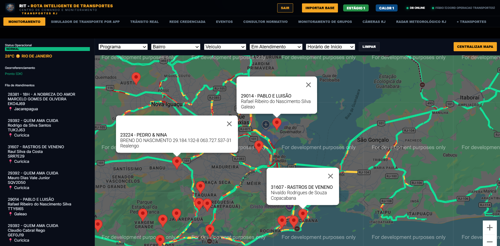
Trânsito Real & Informes OTT
Apoio crítico de segurança. Plotagem de ocorrências de segurança diretamente no trajeto do trânsito da cidade em tempo real.
Alertas do Onde Tem Tiroteio
Integração e atualização constante de informes OTT de tiroteios e bloqueios.
Apoio na Tomada de Decisão
Visualização e cálculo de risco imediato para manter a frota segura.
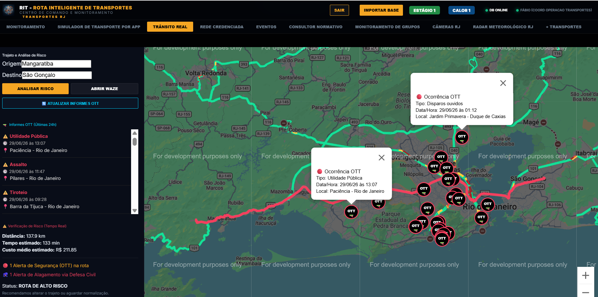
Rede Credenciada Ticket Log
Mapa dinâmico de rede de suporte para busca rápida de postos e credenciados de combustível da frota Globo no Rio de Janeiro.
Localização de Postos de Serviços
Busca e filtragem de credenciados por endereço ou proximidade.
Ticket Log / Good Card
Integração oficial via portal seguro e unificado de consulta.
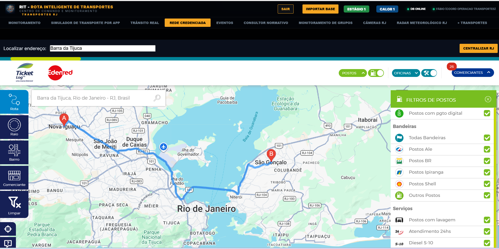
Controle de Grandes Eventos
Monitoramento analítico do impacto no tráfego urbano em grandes eventos (Carnaval, Rock in Rio, Réveillon) com mapas personalizados.
Planos Operacionais
Visualização e importação de mapas temáticos específicos.
Integração Google My Maps
Carregamento dinâmico de traçados e pontos de bloqueio urbano.
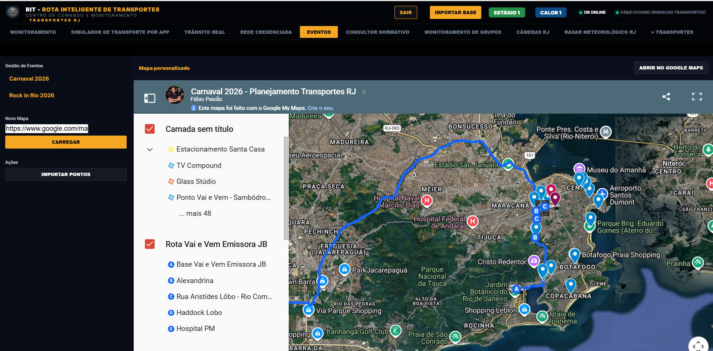
Consultor Normativo com IA
Assistente cognitivo com inteligência artificial para consulta instantânea sobre regulamentos de transportes, normas de cargas e pessoas.
IA RAG Integrada
Leitura inteligente de normas internas usando o motor Groq SDK.
Filtro de Contextos
Bases rápidas para normas de cargas, trânsito ou colaboradores.
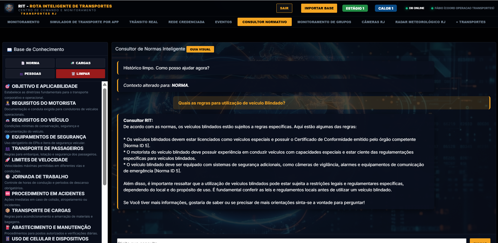
Monitoramento de Grupos
Módulo dedicado para acompanhar grupos de mensagens do WhatsApp Web para coordenação e comunicados rápidos da operação urbana.
Link Corporativo Seguro
Abertura do WhatsApp Web de forma isolada mantendo a segurança.
Sandbox e Proteção de Dados
Ambiente que preserva dados e credenciais operacionais Globo.
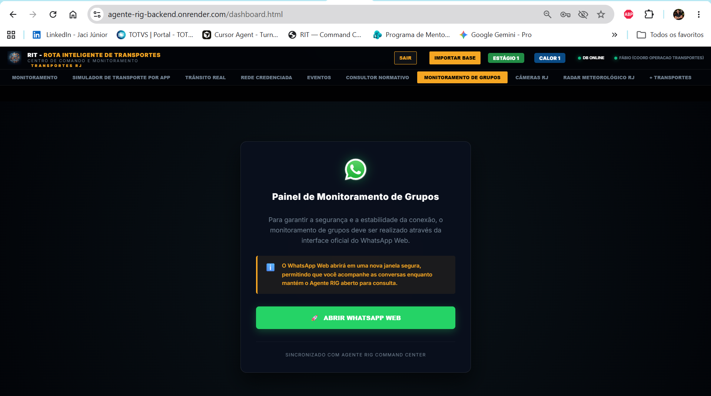
Câmeras RJ ao Vivo
Visualização direta de câmeras públicas para checar congestionamentos e acidentes em vias cruciais no Rio de Janeiro.
Fontes Públicas do COR
Integração fluida com as câmeras ativas da prefeitura.
Busca por Bairro
Acesso e seleção rápidos de câmeras no local de interesse logístico.
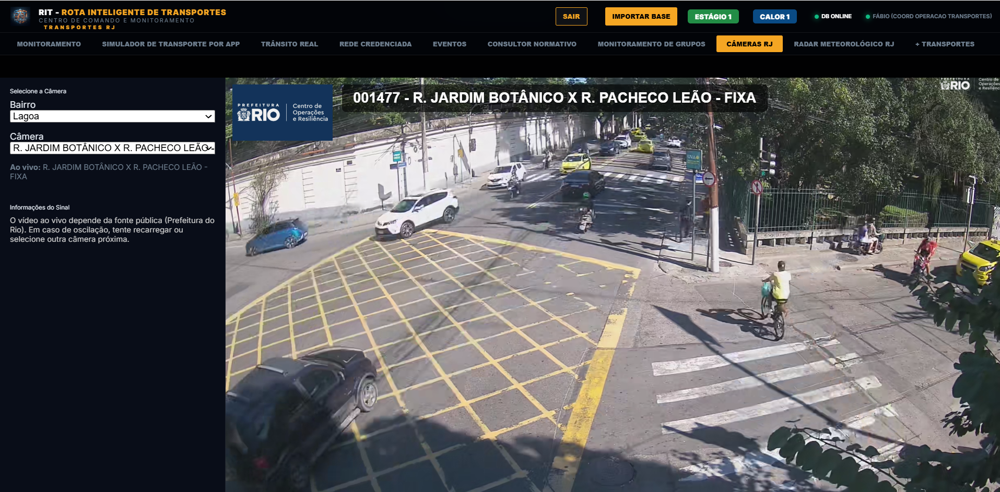
Radar Meteorológico
Módulo climático para acompanhar alertas e núcleos de chuva forte sobre o Rio de Janeiro com previsão de intercorrências logísticas.
Radar Alerta Rio Integrado
Mapa interativo do radar meteorológico oficial ao vivo.
Previsão de Impacto
Auxilia na mitigação de atrasos por alagamentos ou temporais.
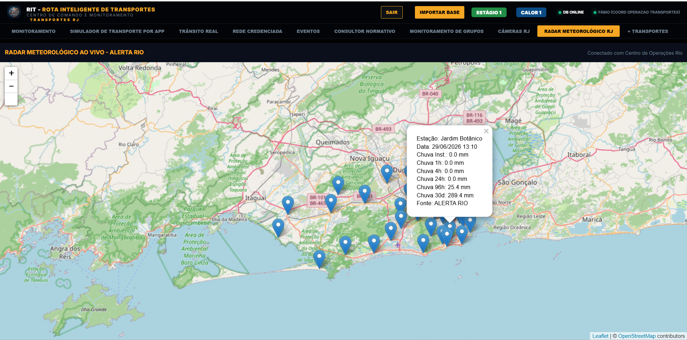
Portal Seguro + Transportes
Conexão segura com o sistema Wiselog 360 da Globo para gestão e auditoria de viagens e rotas de entrega.
Portal Wiselog Integrado
Controle unificado de expedição e transporte corporativo Globo.
Segurança de Login Integrada
Túnel web que utiliza a própria autenticação ativa na Globo.
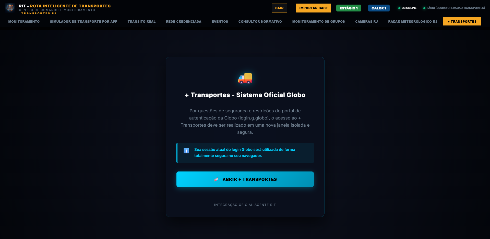
CONTROLE DE DADOS & AUDITORIA DE DADOS
O Agente RIT é uma ferramenta robusta voltada a transparência e integridade operacional. Todos os logins, logs de acesso e parametrizações operacionais são auditados.
Agente RIT — Rota Inteligente de Transportes 2026